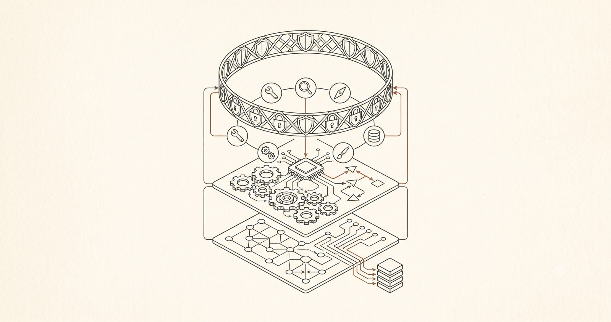

I've spent thirty years in technology. I started on a sales floor selling computers, then moved to a help desk, then desktop support, then server rooms, then email systems, then the messy frontier of mobile and wireless. Somewhere in there I crossed into risk and compliance, and for the last ten years my job has been technology audit — looking at other people's systems and asking the questions nobody enjoys answering.
Is it reliable? Who approved that? What happens when it fails? Can you prove any of it?
Then AI agents arrived — and I noticed that almost every tutorial teaching people to build them skipped exactly those questions. They'd rush you to a flashy demo and stop. Nobody was teaching the part I've spent my career on: how to own the thing once it's actually running.
So I taught myself to build agents properly — not to a demo, but to the point where I'd trust one in production — and I wrote down everything I learned as a free, structured course. It's called Agentic Operations, and it's live now.
Sixteen lessons, four levels
The course is sixteen lessons across four levels — Foundations, Developing, Advanced, and Operational Leadership. Four of them are short "mental-model" lessons that build the intuition; the other twelve are hands-on build-and-break labs where you write real code against a real API.
You start at the single most important idea in the whole field — if it's not in the context window, it doesn't exist to the model¹ — and you finish by running a full observe → diagnose → fix → verify loop on an agent held to production targets. Each level ends with a gate you pass by demonstrating the skill, not by scrolling to the bottom.
The arc of the course — from laying the first bricks at Level 1 to standing over a production system you own at Level 4.
You build it. Then you break it on purpose.
Every lab makes you ship something that works — and then deliberately break it. You flood the context window with junk and watch answer quality collapse. You write a prompt injection that hijacks your own agent into leaking a secret it was told to protect². You plant a regression in your own code and prove your eval suite catches it³ before it would have shipped.
This isn't sabotage for its own sake. It's the auditor's instinct turned into a teaching method: you don't understand a system — and you certainly don't own it — until you've watched it fail on purpose, in a place where failing is safe. Find the failure mode before it finds you.
Every lab ends by breaking what you just built. Open the panel, find the crack — that's where the understanding lives.
The part most tutorials skip: owning it
Anyone can get an agent to answer once. The hard part — the part I enjoy most — is running one you can stand behind. So the course treats reliability, cost, and safety as the destination, not a footnote.
By Level 4 you're defining service level objectives for an agent you actually run — success rate, latency, cost-per-task, escalation rate, and building a dashboard that holds it to them. You scope tools to least privilege so a hijacked prompt can't reach anything dangerous. You place a human checkpoint by risk, and you measure what that checkpoint costs in throughput. You make every consequential action auditable. This is the operational discipline that turns a clever demo into a system a business can actually depend on.

An agent is layers: a model core, its tools, its memory — wrapped in a ring of guardrails. Level 4 is learning to own all of it.
How you actually take it
It runs on your own Anthropic API key — bring your own key, spend a few dollars of your own credit, and nothing you build ever leaves your machine. No signup, no email wall, no upsell. Keep your own AI assistant open beside the lessons, too; working through follow-up questions with it is part of the method, not a detour.
And you advance by proving it. Each level ends with a gate — a small thing you have to actually demonstrate before you move up. Reading the page isn't passing. Doing the thing is.
I built it in the open — with an AI
I wrote and structured this course working alongside Fable 5, a frontier AI model, the same way I build everything else I write about here. There's a certain symmetry to it: an auditor using AI — transparently and on the record — to teach other people how to build and govern AI. The lens I point at everyone else's systems is the same one I point at my own process.
That's also why the whole thing is free and public. The uncomfortable questions don't go away because the technology is new. They get more important. This course is my long answer to the hardest one — "can you prove it?
Start at Lesson 0001
If you're a builder who wants more than a demo, an auditor or risk leader who needs to genuinely understand what you're governing, or a leader trying to figure out what it actually takes to run agents responsibly — this was written for you.
Open Lesson 0001, keep your own AI assistant open beside it, and work down the ladder. It's free, it's live, and it's yours.
Take the course → scottcurtner.com/learning/agentic-operations
1 Anthropic: Effective context engineering for AI agents — why what's in the context window is the whole of what the model can act on.
2 Simon Willison's prompt injection series — the foundational writing on why untrusted data in context can hijack an agent's instructions.
3 Hamel Husain: Your AI Product Needs Evals — the eval suite as the ground truth that catches regressions before they ship.
4 Google SRE Book, ch. 4: Service Level Objectives — read "agent run" for "request."
5 OWASP Top 10 for LLM Applications — the standard taxonomy for agent guardrails, with prompt injection at #1.